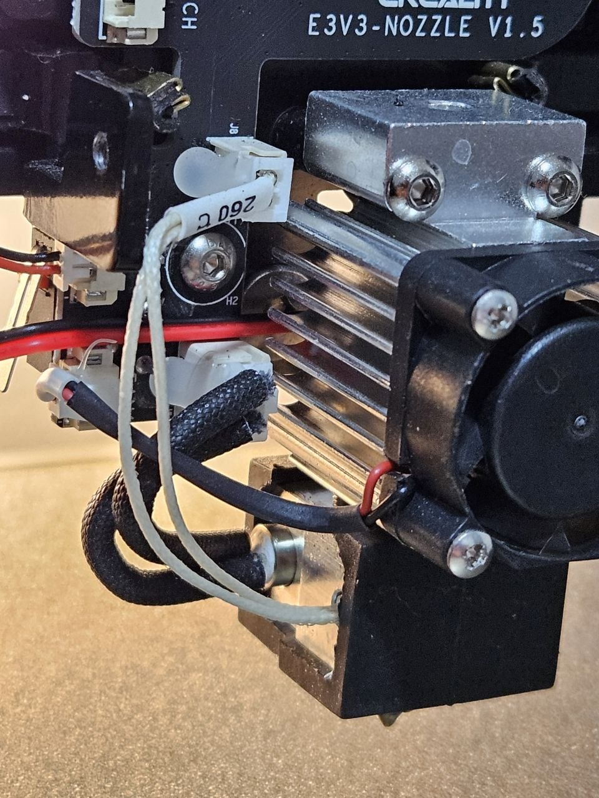
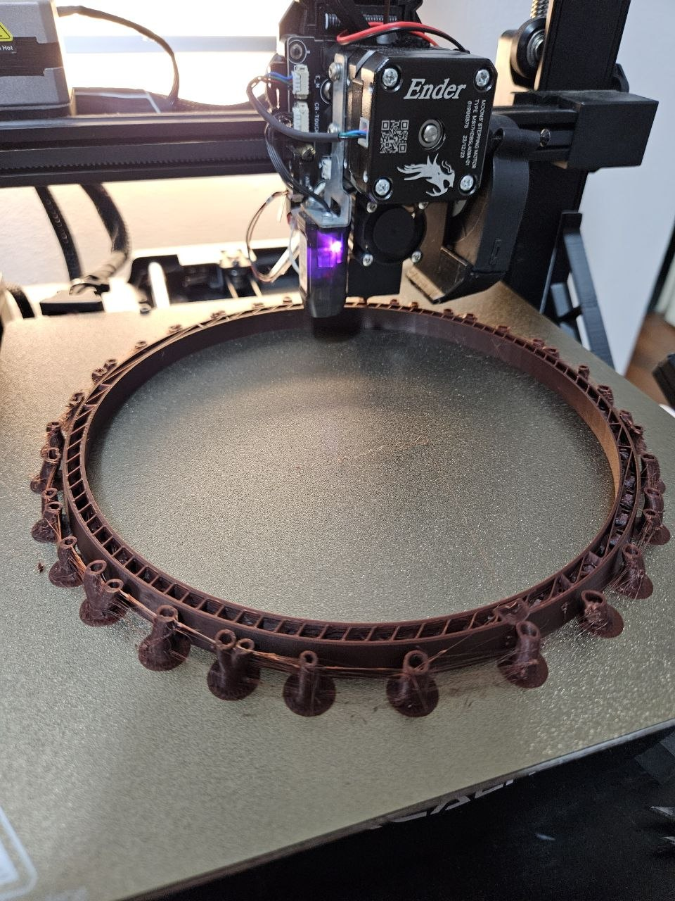
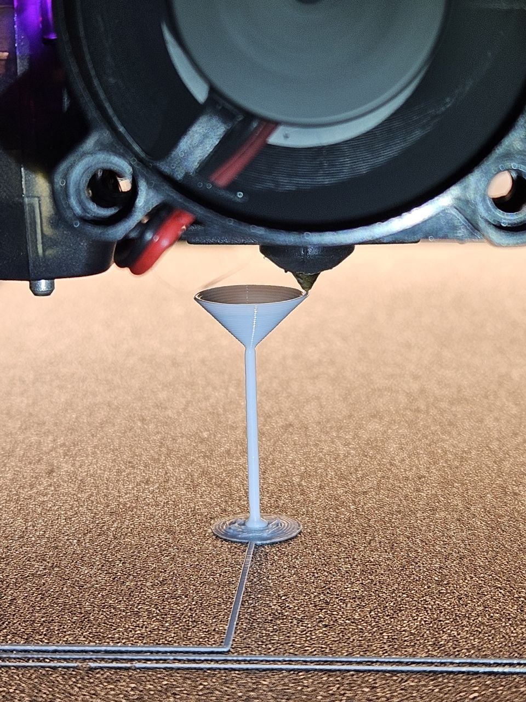

The Challenge
This project involved the comprehensive re-engineering of an Ender 3 V3 SE to improve its print fidelity, thermal stability, and mechanical reliability. I aimed to diagnose the stock machine's limitations and transform it into a robust tool capable of manufacturing high-quality functional prototypes.
Acoustic & Airflow Redesign
To mitigate thermal inconsistencies that frequently affect print quality—and to drastically reduce the machine's acoustic footprint—I performed a full overhaul of the cooling system.
- Hotend Cooling Integration: Replaced the excessively loud stock 20mm hotend fan with a high-efficiency alternative, executing Auto-PID tuning to recalibrate the thermal profiles for the new cooling dynamics and significantly reducing ambient noise during operations.
- Part Cooling Upgrades: Replaced stock part-cooling components with high-performance WINSINN 5015 blowers and 4010 cooling fans.
- Custom Ducting: Designed a custom, 3D-printed print-head shroud using Fusion 360 to optimize laminar airflow over the hotend, ensuring rapid filament solidification and minimizing warping in complex geometries.

WINSINN 5015 blowers for rapid part cooling.

WINSINN 4010 cooling fans.

Acoustic Optimization: Wiring integration of the high-efficiency hotend fan, significantly reducing ambient noise levels during operation.
Build Surface Optimization
Beyond thermal management, I focused on improving the mechanical integrity and material compatibility of the printer by replacing the stock PC (polycarbonate) sticker sheet with a textured PEI spring steel sheet.
- Optimized Thermal Adhesion: Plastics like PLA and PETG firmly stick to the textured surface at high temperatures without the need for messy glues or hairspray, preventing warping.
- Effortless Part Release: When the bed cools, prints naturally pop off, or can be instantly removed by slightly flexing the steel sheet.
- Enhanced Durability: The PEI surface easily handles higher temperatures and aggressively resists nozzle scratching compared to stock surfaces.

PEI Integration: Printing a large, continuous circular prototype directly onto the textured PEI plate, demonstrating flawless first-layer adhesion without secondary adhesives.
Validation Benchmarking
To validate the success of the thermal, cooling, and mechanical upgrades, I ran the machine through the rigorous "Cone Pin Challenge." This benchmark pushes the slicer and machine capabilities to their absolute limits by printing a highly unstable geometry entirely without structural supports.

Extreme Limits Testing: A successful completion of the unsupported Cone Pin Challenge, validating the upgraded hardware.
This specific benchmark evaluates four critical performance metrics:
- Bed Adhesion: The entire model relies on a remarkably small circular base remaining firmly stuck to the PEI plate despite the leverage created by the print head above it.
- Z-Axis & Extrusion Stability: The long, ultra-thin stem proves precise layer alignment, excellent vibration control, and perfectly consistent filament flow.
- Part Cooling & Retraction: The top cone verifies that the upgraded WINSINN fans provide rapid layer cooling to maintain the widening shape, alongside clean retraction settings to avoid stringing.
- Extreme Overhangs: The steep upward-flaring walls test the printer's ability to lay down outer perimeters over thin air without sagging or catastrophic collapse.
Functional Prototyping
With the machine fully calibrated and validated, it serves as a highly reliable tool for manufacturing load-bearing, functional components.
- Utility Hardware: Designed and manufactured a custom power bank holder with precision-engineered tolerance fits.
- Maintenance Tools: Engineered a custom faucet tap key to operate a faucet with a failed handle mechanism, demonstrating the machine's utility in rapid emergency repair.
- Enclosures: Created custom-fitted housings and boxes with integrated slot mechanisms for organizational tasks.